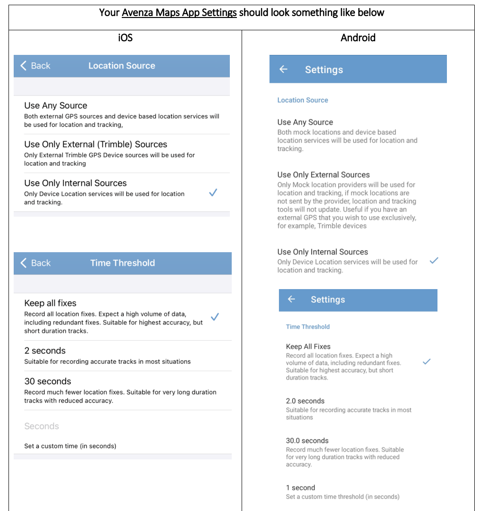
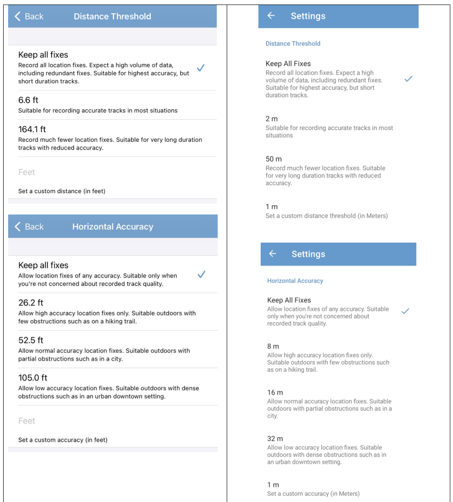
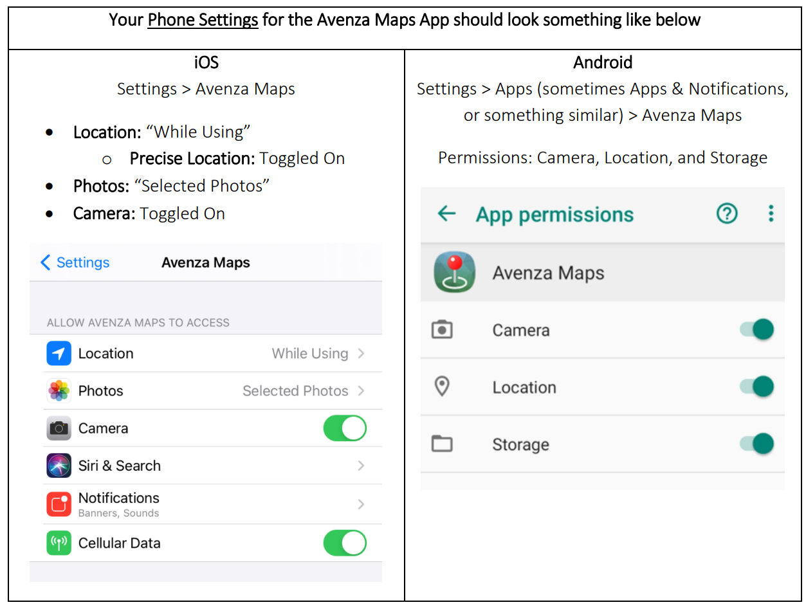

Lab: 2 Collecting and processing GNSS data
Written by Paul D. Pickell
Lab Overview
Oftentimes, you will need to collect and display your own data. There are many phone applications to collect your own GNSS data. In this lab, you will plan your own GNSS collection, collect data, and process the data.
Learning Objectives
- Plan for field data collection
- Use AvenzaMaps to collect GNSS readings
- Evaluate the accuracy and precision of GNSS coordinates
Deliverables
Responses to the questions posed throughout the lab on the course management system. (57 points)
Screenshots of your Trimble GNSS Planning tool charts (your settings must be visible in all the screenshots): Number of Satellites, DOPs, Iono Information, Sky Plot. (8 points)
Map of the “True” and “Observed” points. (25 points)
Table of accuracy and precision calculated values. (10 points)
Task 1: Preparing for GNSS Data Collection
Field data collection is an important skill set to learn and practice. In this task, you will plan the collection of your GNSS data in a public park. The task for collecting GNSS data in a public park has nearly the same risks as if you collected the data on campus and you are expected to take similar precautions. This section is meant to inform you of the likely hazards and how to stay safe.
Planning Your Data Collection Safety starts at the planning stage. When planning which park you will visit, consider somewhere nearby that is easily accessible by transit or walking. Avoid going somewhere that is unfamiliar to you. Ensure that you are visiting a public park and stay off of private or restricted property. You should only visit the park during daylight hours and plan to go out in sunny weather only. Check government websites for any recent animal sightings before you commit to going to your desired park. Do not plan to collect your GNSS data near bodies of water (e.g., oceans, lakes, ponds, rivers, streams). Do not plan to collect your GNSS data near cliffs or on steep terrain. Finally, ensure that you will have good cell phone coverage in case of an emergency.
Likely Hazards At all times, you must be aware of possible hazards both overhead and underfoot. The main overhead hazard in a public park is going to be trees and falling branches. Do not collect your GNSS data during windy or stormy weather, which may cause tree branches to fall. Wet and slippery surfaces, steep angles, holes, logs, debris, and loose soil all pose fall hazards. Many of these hazards can be avoided with careful planning before you even step outside. Speaking of stepping, make sure you wear appropriate footwear, closed toed shoes are best for this work. Fauna are natural inhabitants of parks. Do not visit parks with recent sightings for large, predatory fauna such as bears or cougars. Even urban parks like Stanley Park in downtown Vancouver are known to have coyotes who have attacked people. As well, avoid areas with hazardous flora that may be thorny or poisonous. You may need to cross or transit streets to reach your park. Always follow local traffic laws and look for moving vehicles in and around your park. Always use designated crosswalks and do not look at your phone when walking near stopped or moving vehicles.
Do not collect your GNSS data while walking and looking at your phone. Always be aware of your surroundings.
Important: If you feel uncomfortable undertaking this task, please contact the instructor for alternative arrangements or accommodations for this particular assignment
For this lab, you will decide on your own study area through your own knowledge and simple remote sensing.
Your study area must:
- Be somewhere that you can legally and safely visit
- Be a park or a greenspace
- Have at least a portion of its ground visible using aerial imagery (e.g. Google Earth or an ArcGIS Pro basemap)
Q1. Describe your study area. Where is it located? What features are around? Why did you choose this location? (5 points)
Step 1: Open ArcGIS Pro and turn on an imagery basemap (Map > Basemap > Imagery). Navigate to your proposed study area. You can do this by (a) dragging around your map, (b) putting coordinates into Go To XY, (c) typing in an address or park name into the Locate tool.
Before physically visiting your study area, you will need to verify that there are usable reference points in your chosen park. The reference points should be immovable, viewable from the sky and ground, and not tall (not trees or buildings). Additionally, you will be walking to your points – so they should be somewhere safely accessible and not too close or too far from each other.
Step 2: Find at least five possible reference points (all at least 10 m from each other). You will create a new feature class and populate it with these reference points. In “Geoprocessing”, find the “Create Feature Class” tool by searching for “Create Feature Class”. Save it to your ArcGIS Pro project geodatabase and give it a meaningful name (for this lab, it will be called “refpoints”). For the other options:
- Geometry Type: Point
- Has M: No
- Has Z: No
- Coordinate System: –Local UTM–
- Click “Run”
Your new feature class should now be in the “Contents” Pane, but it has no points.
Q2. Describe each of your five reference points. What features do they represent? (5 points)
Choose “Edit” from the top ribbon, then select “Create”. On the right, a “Create Features” pane will appear. In there, click refpoints, then select “Create a Point Feature”. Zoom in closely on the basemap before creating point features so that the points are more accurate. Click on (at least) four reference points, then select “Save” from the Edit ribbon. If you need to Move a reference point, you can select Move from the Edit Tools.
Open the attribute table of refpoints and add three new columns: Name, East, North. Populate the columns for each reference point: Name – a unique name. East – Easting. North – Northing. Easting and Northing can be populated using “Calculate Geometry.” For more relatable measurements in your precision and accuracy assessment (Task 3), use your local UTM for the geometry. Be sure to save your edits.
Step 3: You will be exporting a georeferenced map of your study area. Zoom in (or out) to an extent that contains at least the entire park.
Using the top ribbon, select Share > Export Map. A pane will pop up on the right-hand side of your screen. The file type is PDF, and make sure that it is saved somewhere you will be able to find it. Toward the bottom of the pane, make sure that the box under “PDF Settings” that says “Export georeference information” is selected. Then select export. This will be used when you are collecting data with Avenza.
Step 4: Now that you have established a study area, you need to decide when you will be collecting your data. There are times in the day where you are more likely to get accurate GNSS readings. Find the coordinates of your study area so that you can use them in the Trimble GNSS Planning Online website (http://www.gnssplanning.com/).
Go to the Trimble GNSS Planning Online website and enter your study area’s coordinates (one set of coordinates from anywhere within the study area) and elevation. If your coordinates are not in the proper units, either convert them to the proper units. Choose the day that you plan to visit your field site and collect data.
After you have input your information into Settings, click “Apply” and look through the other tabs (Satellite Library, Charts, Sky Plot, World View). Using the information on the website, determine the ideal time to collect your GNSS points. Justify your chosen time using the data on the website (this justification should be included on your report, along with screenshots from the webpage).
Screenshot 1. Upload a screenshot of the Number of Satellites chart from the Trimble GNSS Planning Tool. The settings that you used must be visible in the screenshot. (2 points)
Screenshot 2. Upload a screenshot of the DOPs chart from the Trimble GNSS Planning Tool. The settings that you used must be visible in the screenshot. (2 points)
Screenshot 3. Upload a screenshot of the Iono Information chart from the Trimble GNSS Planning Tool. The settings that you used must be visible in the screenshot. (2 points)
Task 2: Collect GNSS Data
You will need either an Android or iOS smartphone capable of installing the Avenza Maps App. If you do not have an Android or iOS smartphone, then please contact the instructor for alternative arrangements or accommodations
Step 1: To start you will need to install Avenza Maps App on your phone. There is an Android version as well as an iOS version so just go to your app store and download it. It’s free!
Step 2: Once you have the app installed on your phone, you need to sign up for a free account. If you have concerns about your privacy, you can use a pseudonym and your student UBC e-mail address.Avenza Maps is a widely used mobile mapping application, so chances are you might continue to use it in the future for other projects or hobbies. If you want to ensure future access to your Avenza Maps account and assets, then choose an e-mail account that you will continue to have access to (i.e., not your UBC student e-mail).
Step 3: Now that you are registered and logged in, you will change some settings in the Avenza Maps app. Navigate to the Settings in the bottom right corner (for iOS) and in the top right corner (for Android). Scroll down and click “GPS settings”. Use the following settings:
- Location Source: “Use Only Internal Sources”. This ensures that we are only using the phone’s internal GNSS receiver.
- Horizontal Accuracy: “Keep all fixes”
- Distance Thresholds: “Keep all fixes”
- Time Threshold: “Keep all fixes”
- Ignore Suspicious Fixes: Toggled Off
Next, we will set the units to metric. In Settings, navigate to “Units of Measurement” and select “Metric” at the top. Under “Coordinates”, ensure that the “Format” is set to a workable coordinate system.


Step 4: Ensure that the Avenza Maps App is allowed to access your location, camera, and photos in your phone’s settings.

Important: Personal location is very sensitive information. You should not undertake this exercise at your home or share the coordinates or screenshots of your home location in Avenza Maps with anyone, including the instructor, TA, or other students in this course. Treat personal location information as any other private sensitive information and handle with respect and care.
Step 5: Avenza Maps requires you to load a map before being able to use the location service of your phone. You will import the georeferenced PDF map that you created in Task 1. There are several ways to do this in Avenza Maps, but probably the easiest is to download the PDF to your phone and then import directly from your phone. Be aware that map size can be large and will consume cellular data if you are not connected to a wifi network.
If you ran into problems creating your georeferenced PDF, then you can use the provided georeferenced PDF on Canvas for the world. In the end, the actual map that you use is not important for collecting your GNSS data, but Avenza Maps requires a georeferenced map be loaded in the app.
Step 6: Travel to your study area! Open the Avenza app, and select the Georeferenced PDF under “My Maps.” Go to one of the reference points you selected in ArcGIS. On the bottom right of the app, there is a button that will bring the map to your current area. Press that button, then press the placemark button directly to the right of it. Create a placemark and name it something meaningful (for example: placemark 1, location 1). Stay exactly where you are, and create a placemark every 10 seconds for the next minute by pressing the location button then the placemark. You should have a total of 6 placemarks. Take a picture of the area you are trying to geographically capture. Go to two more of your designated locations and do the same procedure (create 6 placemarks, each 10 seconds apart, and take a picture.
Step 7: Now you can return back to your workstation (after taking a nice walk!). In Avenza, go back to “My Maps,” then select Layers (at the bottom). Select the layer you created, then the icon with three lines at the bottom right. Choose export layers. Export the layer as a KML by pressing the EXPORT option at the top right. A list of export applications should pop up—choose whichever one you would prefer.
Step 8: Find your exported file and bring it into ArcGIS Pro. You can drag and drop it from the Catalog Pane into the main map. From there, you should export the kml file to layer using the tool “KML to Layer”.
Task 3: Assess Precision, Accuracy, and Possible Errors
For this lab, we will consider the initial ArcGIS-created reference points as the “true” values and perform an accuracy assessment with that in mind.
Step 1: Visually compare the Avenza-created Placemarks (called “Observed values” for the rest of the lab) with each other and ArcGIS reference points. How close/far are they from one another? You can use the measure tool to add values to this visual assessment. When you are comparing the observed values to each other, you are assessing precision, when you are comparing them to the “True” locations, you are assessing accuracy.
Step 2: Quantitatively determine the accuracy of the points. Add two columns in the Observed attribute table and populate them with the east and north values for each point. You should have the True values from your reference point attribute table. Export both tables and bring them into excel.
Calculate the horizontal accuracy for each placemark using the following equation:
\(\sigma_{H_{acc}} = \sqrt{(\overline{E} - E_{true})^2 + (\overline{N} - N_{true})^2}\)
Excel is a convenient place to use this equation. Breaking down the equation – get the mean observed East value, then subtract the “True” East value. Square this difference. Do the same for North. Add the north and east results, then take the square root of them. In excel, you can do this with the equation:
=SQRT((average(observed east values)-true east value)^2+((average(observed north values)-true north value)^2))
The resulting value represents how accurate the GNSS measurements were – a lower value represents greater accuracy. Is there a noticeable difference in accuracy between your placemarks? Why do you think this is?
To assess the precision, you will use the following equation:
\(\sigma_{H_{pre} = \sqrt{\sigma^2_E + \sigma^2_N}}\)
Calculate the standard deviation of the observed East and North values, square them, then add them and take the square root of the sum. In excel, you can do this with the equation:
=SQRT((STDEV(observed east values)^2 + STDEV(observed values)^2))
The resulting value represents how precise the GNSS measurements were – a lower value represents greater accuracy. Is there a noticeable difference in precision between your placemarks? Why do you think this is?
Table 1. Submit a table that shows the accuracy and precision calculated values for each point. (10 points)
Q5. Discuss the potential errors in your data collection and describe what may have affected accuracy and precision. Integrate your site observations with the information from the Trimble GNSS Planning tool. Finally, reflect on the validity of the “True” points that you derived from the basemap imagery. (25 points)
Summary
In this lab, you learned how to plan, collect, and process GNSS data using a combination of ArcGIS Pro, Trimble GNSS Planning tools, and the Avenza Maps mobile application. Planning is a critical part of the GNSS collection process for both safety concerns and also to acquire the best satellite signals. Using the Trimble Planning Tool, you evaluated satellite availability, DOPs, and ionospheric conditions to select an ideal collection time. In the field, you practiced recording GNSS coordinates at reference points with Avenza Maps, producing multiple observations to assess variability. Back in the lab, you compared these “observed” values with the ArcGIS “true” reference points to calculate both precision and accuracy. This exercise highlighted the limitations of phone-based GNSS receivers, the effects of environmental conditions on data quality, and the importance of systematic planning and error assessment in field data collection. Overall, this lab showed you not only the technical workflow for GNSS data collection and analysis but also how to critically evaluate results by integrating field observations with planning tools and quantitative measures of accuracy and precision.
Return to the Deliverables section to check off everything you need to submit for credit in the course management system.